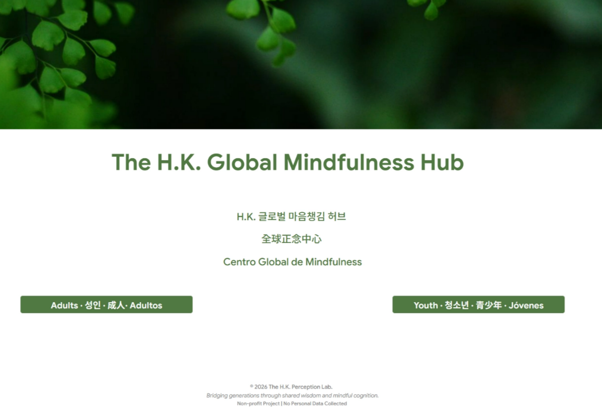
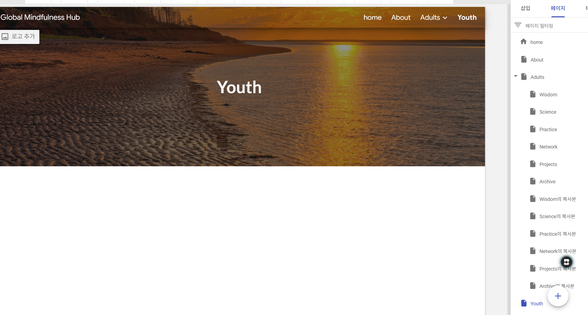
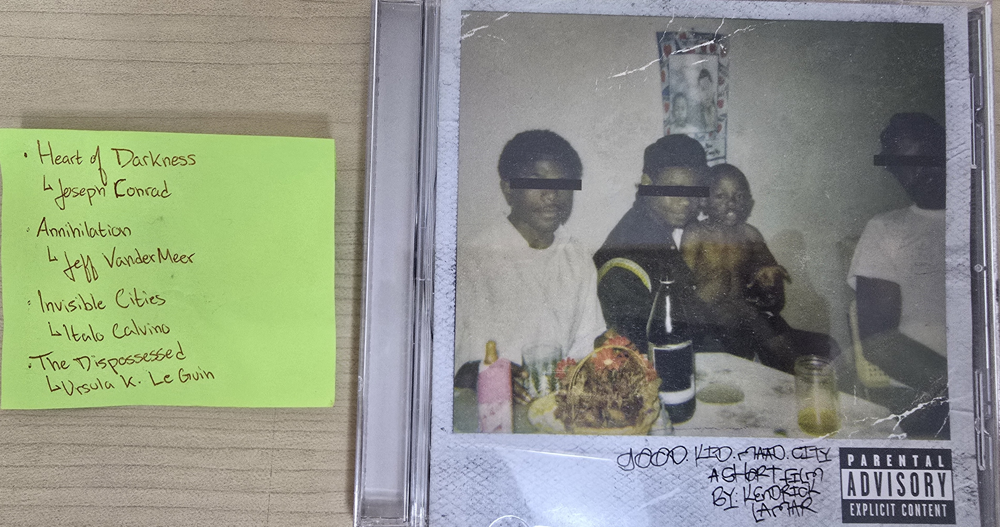
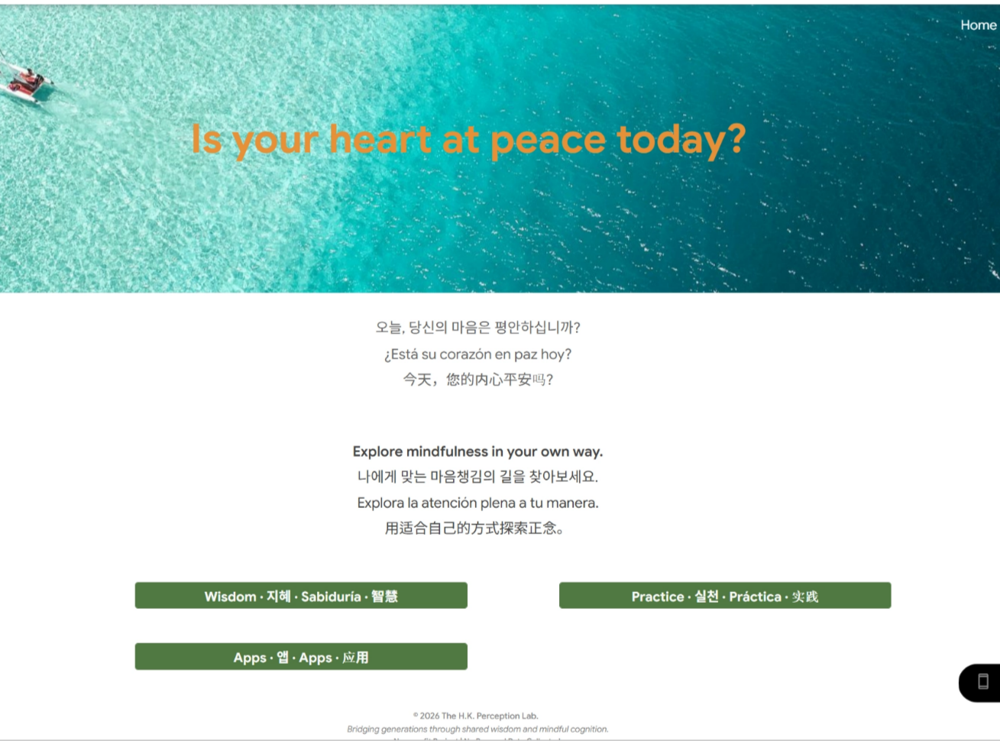
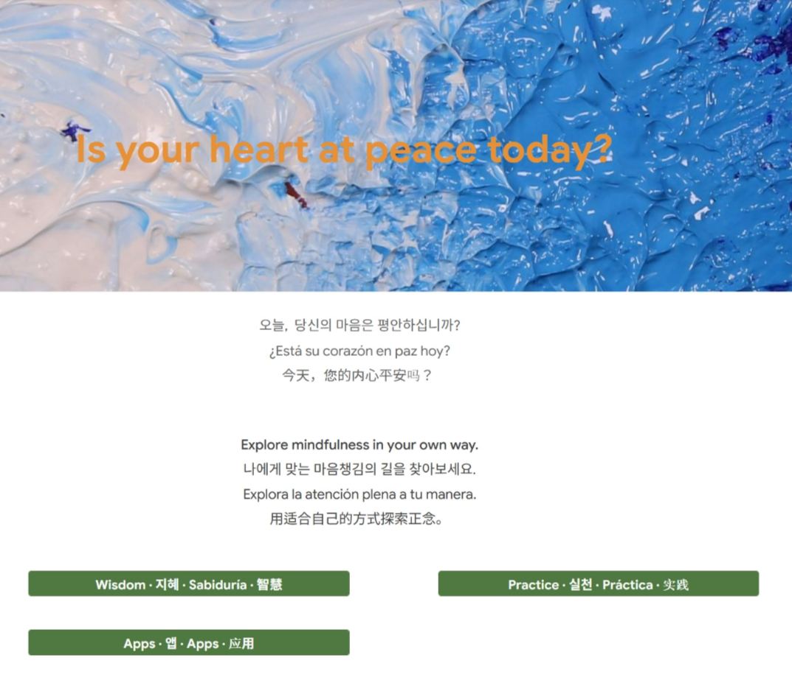
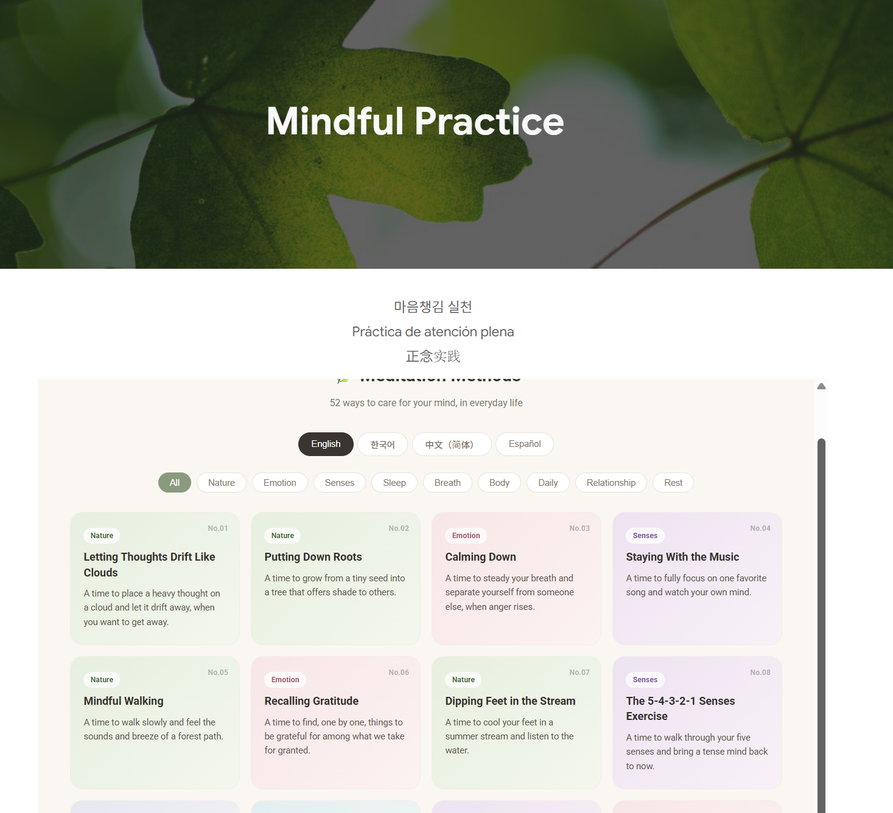
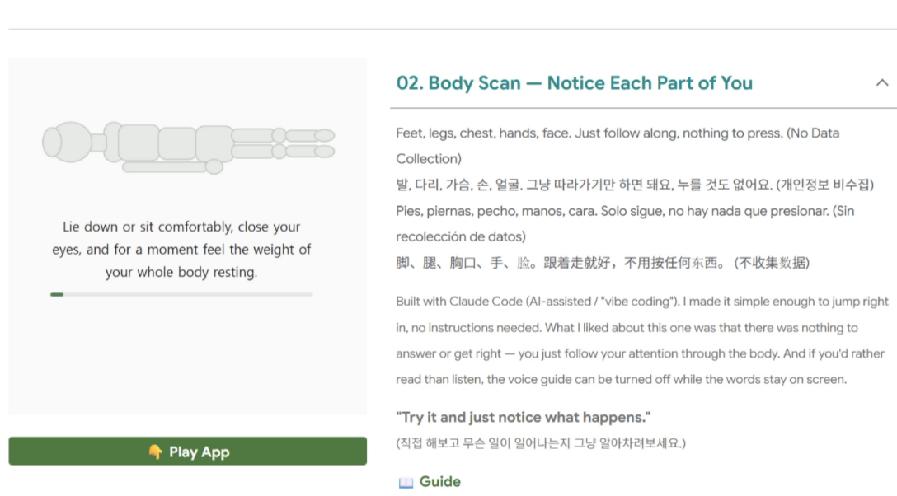

Global Mindfulness Hub
An ongoing student website that brings together mindfulness practices, art, language, and reflection.
Status: The first full version was completed in August 2026. I am still receiving feedback and making changes.
My role: I planned and organized the website, selected and revised the content, designed and built the four interactive mindfulness apps, managed the language versions, and collected feedback.
Website: Global Mindfulness Hub→

1. The beginning
When I was in 10th grade, I first wanted to make a simple emotion journal that people of any age could use on their phones. I did not know how to make an app, so I began learning through GPTers, an online community where I tried simple AI-assisted app building.
As I explored different tools, I found that Google Sites was the easiest for me to begin using. Around that time, my idea also started to change. Instead of making only an emotion journal, I wanted one place where I could collect things I was learning or thinking about. I began adding mindfulness practices, literature, art, language, and small interactive activities.
The project became much larger than my first idea. I wanted to try many things, so the website slowly became a kind of personal space for experimenting with my interests.

2. Adults and Youth
I did not divide the website into Adults and Youth only because of age. I was thinking about two people in my family.
For the Youth section, I especially thought about my younger brother. He was living under a lot of academic pressure in Korea and spent much of his free time on his phone. However, he also loved language. He read books such as The Divine Comedy and The Republic, wrote poems, and listened closely to hip-hop lyrics.
When I returned to Korea during vacation, I brought him a CD by a musician he liked. We listened to the music together and talked about the lyrics. I also asked my literature teacher to recommend books for him. My teacher wrote out a list by hand, and I brought it home and gave it to my brother. Since I could not be with my brother during most of the school year, I wanted to make something he could sometimes explore by himself on his phone. I also did not want the Youth section to feel childish.

For the Adults section, I thought about my grandmother. She lives in the countryside and no longer works on the farm. She often waits for calls from her children. I hoped the website might give her something quiet to read or try.
However, after making the website, I realized that some of the text might be too small and the structure might be too complicated for her. I learned that making a section for adults did not automatically make it easy for older adults to use. Larger text and simpler navigation are things I still need to consider.


The Adults (left) and Youth (right) starting pages. They use the same basic structure, but some content is different.
3. What I put on the website
Both the Adults and Youth sections have three main sections: Wisdom & Art, Practice, and Mindfulness Apps. I used the same basic structure so that it would be easier to move through the website. However, the content is not completely the same. I tried to change the language, examples, and some activities for each group, although several parts still overlap.
Wisdom & Art
I was worried that a website only about mindfulness might feel repetitive. I added literature, quotations, and art so that visitors could approach mindfulness in another way. I divided this section into six themes, including uncertainty, relationships, courage, letting go, perspective, and stillness.
In the Youth section especially, I included writings connected to Alexander Hamilton, whom I have been interested in for a long time, and literary works that I first read in class. I thought that some teenagers, including my brother, might connect more easily with history, stories, or poems than with direct advice about mindfulness. I wanted to share some of the words that had stayed with me and see how they might feel when placed beside art and mindfulness.
Making this section also helped me. I found online art collections that I had not known before, and I began visiting some of them again on my own. Even familiar quotations sometimes felt different when I placed them beside an image or another text.
Practice
This section contains 52 short meditation and mindfulness practices. I made an HTML page where visitors can choose a language, filter the practices by theme, and select an activity.
Many of the practices began with ordinary moments I remembered, such as noticing fresh green leaves while riding a bicycle, walking beside a stream after rain, or putting my feet in cold water during summer. Each practice followed a similar structure: a short note on its background, an introduction, a script that someone could follow, and a closing sentence.
Some practices are shared by Adults and Youth, while others are different. When a practice focused mainly on breathing, the body, or the senses, I kept the main activity similar because the process did not change with age. When daily life mattered more, I changed the examples and wording. For example, the Youth version of one cloud practice refers to school and test worries, while the Adults version refers to unfinished work and responsibilities. I had originally hoped to make more of the two versions different, but I did not have enough time to rewrite every practice.
The idea for this section partly came from Christopher Willard’s book Growing Up Mindful. While reading it, I noticed short mindfulness prompts written for children and teenagers. They made me think about how a few carefully chosen sentences could help someone begin a small practice without reading a long explanation.
For practices connected to established methods, such as body scans, grounding, cognitive defusion, or progressive muscle relaxation, I checked their backgrounds and recorded a brief source. The final scripts were written for this project rather than copied directly from an app or book.
The Practice scripts for both Adults and Youth were developed with extensive help from the poet Iran and the lyricist Jae-sung Lee, especially in shaping their structure, rhythm, and wording. I brought the topics, personal experiences, and early ideas, and continued revising and organizing the scripts with their help. They also gave me feedback on parts of the Wisdom & Art section.

Mindfulness Apps
The Hub includes four small interactive mindfulness activities: Breath Counting, Body Scan, Lotus, and Quiet Time. I built the apps using Claude Code. I chose the activities, tested each version, and decided how to organize and present them on the website.
The apps do not give scores or measure a person’s ability. They are simple ways to pause and practice for a few minutes. I did not design them to collect names, email addresses, or other personal information.

4. Four language versions
I wanted the Hub to be available to people with different language backgrounds. I used English as the main language and also made Korean, Simplified Chinese, and Spanish versions.
I worked on the English and Korean content and used AI translation tools to help make the Chinese and Spanish versions. I checked the translations several times by comparing different versions and asking for feedback. However, I do not speak Chinese or Spanish well enough to confirm every sentence by myself. These versions still need another review by fluent speakers.
I also included a Traditional Chinese version for a time. I later removed it after receiving feedback because keeping another full version accurate and consistent was more difficult than I expected.
While translating, I noticed that two sentences could have almost the same meaning but still feel different. A sentence could become more formal, lose part of its tone, or communicate a slightly different feeling. I began the translations because I wanted the website to feel global, but the process showed me that adding another language was much easier than carrying the same meaning and feeling into it.
5. Changes and problems
Not every idea worked in the way I expected.
I made a Network section for both Adults and Youth. I connected it to Padlet because I wanted visitors to write something directly and let other visitors see it. However, I could not make it work well inside the website. I removed the section instead of leaving something that did not work properly.
I also made two feedback forms. One asks about the website, and the other asks about the four mindfulness apps. I originally placed the website form in the About section and the app form in the Mindfulness Apps section. Later, I learned that some people could not find them easily. For now, I have also placed feedback buttons on the Home page. I added an email link from the beginning for anyone who wanted to write a longer comment.
The visual design changed many times. I changed pictures, text sizes, and the way pages were arranged. I tried to add more background colors, but I could not make them work in the way I wanted with Google Sites. Some design ideas remained unfinished.
I wanted to add meditation music from YouTube. I also added a singing-bowl sound for a short time. However, I did not own the recordings, and I could not clearly confirm that I had the right to use them. I was not able to buy and record my own singing bowl either. I removed the sounds instead of using recordings with unclear permission.
I used many nature images because I wanted the website to feel quiet and open. However, I learned that a picture of nature still has a creator and can still have copyright. I had to think about the source of the image, not only what was shown in it. I checked the sources of the images and replaced them when I could not confirm that I could use them.
I decided that the interactive part of the Hub should remain small and focused. I kept four mindfulness apps that fit its main purpose.
There were also smaller technical problems. Some links led to an error page, and some layouts did not look the same on different screens. A page working on my computer did not always mean that it would be easy for another person to use. I had to open links again, test pages, and make changes several times.
6. Feedback
The first idea for the Hub came earlier, but I actively worked on the website for about a year. Progress was often slow because I was building it while also doing schoolwork and other activities. I completed the first full version near the end of August 2026.
I did not share the website widely while many sections were still unfinished. After completing the first version, I began sending the link to teachers and people I knew. I am now collecting feedback and using it to make additions and corrections.
I made two short feedback forms. One asks about the website, and the other asks about the mindfulness apps. I first placed the website form in the About section and the app form in Mindfulness Apps section. However, some people did not find them easily. For now, I have also placed buttons for both forms on the Home page. The forms do not ask for names or email addresses.
Both forms are still open, and I am continuing to receive responses. As of October 2026, 28 people had answered the website feedback form and 26 had answered the app feedback form. These are not final results. I am using the responses to find problems and decide what I should change.
The responses were generally positive, but they also showed several problems. Some people wanted a clearer language selector and simpler navigation. Others said that the website had too much content or that some explanations were too abstract. For the apps, several people wanted clearer explanations of their purpose and instructions. One person also reported a problem opening an app on a phone.
My younger brother, who was one of the people I had in mind when I made the Youth section, also gave me many comments. He shared the website with some of his friends, and my mother told me that he often visited it on his own. I was glad about this because I had originally hoped to make something that he might actually choose to look at on his phone.
I also showed the website to a Korean Buddhist monk who is a qualified meditation instructor. He said that if I wanted to make a mindfulness website for the general public, it would be better to reduce the amount of content and make it easier to read. His comments were similar to what several people who responded to the forms had said.
These comments were useful because some problems were difficult for me to notice after looking at the website for so long. While making it, I often focused on whether I could add a new page, activity, or function. I did not always think enough about how a first-time visitor would understand or use it. This feedback helped me focus more on simplifying the website and explaining the four mindfulness apps clearly.
Christopher Willard’s books, talks, and website were important influences when I began this project. I linked his book and website in the About section of the Hub. After completing the first full version, I contacted him and shared what I had made. He responded positively. He said that the website looked good and that he hoped it could be useful to students. I was glad that I could show the project to someone whose work had helped me begin it.
7. What I learned
As I worked on the website, I kept wanting to add more things. Mindfulness led me to art, literature, language, and interactive activities. Looking back, I think I became too ambitious. I spent much of my time asking whether I could make each idea work, but I did not always think enough about what a visitor would actually need.
Writing for Adults and Youth was also more difficult than I expected. I could not simply give both groups the same sentences. I had to think about which words might feel natural, which expressions might reach them, and whether the tone sounded too serious or too childish. Even when the main idea was the same, the way I approached the reader needed to be different.
Translation made this problem even clearer. Words with similar meanings did not always create the same feeling in another language. I learned that communication is not only about making sure that the meaning is correct. The tone and feeling of the words also matter.
The interactive activities taught me another lesson. I realized that adding more features did not necessarily make the Hub more useful. Each activity needed to fit the purpose of the website and be easy for a visitor to understand. This was not only a technical decision. It was a decision about what the website should be for.
The first response from people around me was quieter than I had expected. I had spent a long time making the Hub, so I felt disappointed at first. However, their responses helped me understand that the website had become much larger and more serious than a person might expect from a mindfulness website. Someone looking for one short and simple activity might not know where to begin.
Before this project, I used websites and apps without thinking much about why a button was in one place, why a sentence was short, or why one picture was chosen. Now I notice these details more. The words, colors, pictures, text size, links, and order of pages all affect how a person understands and uses something. What looks simple on a finished website may have required many decisions.
I still cannot code everything by myself, but making the Hub made me less afraid of trying an unfamiliar tool, finding a problem, and asking for help. The website became a small personal space where I could connect mindfulness, art, literature, language, and technology.
The first version was larger than it needed to be, but I do not think that work was meaningless. It showed me my interests and my limits. Now I want to keep making the Hub clearer, lighter, and easier for another person to use.
How the project changed
I made this timeline later by looking at my saved drafts, file dates, screenshots, and the changes that remained on the website.
Summer between 10th and 11th grade — A small first idea
My first idea was a simple emotion journal that people could use on a phone. During the following fall, I moved the idea to Google Sites and began adding more subjects.
11th-grade fall to June 2026 — Building the main content
During this period, I spent much of my time making the content that later became the Practice and Wisdom & Art sections.
For Practice, I collected ideas for short mindfulness activities and worked on how each one should begin, continue, and end. I showed some of the writing to other people and revised the wording after receiving feedback. It took time to make a practice short without making it feel empty or too general.
For Wisdom & Art, I looked through quotations, literary works, historical writing, and art. I had to choose which words fit each theme instead of adding everything I liked. I also began separating material that might speak more naturally to adults from material that might interest teenagers.
Translation took a large part of this period. I first worked on the meaning in English and Korean and then used translation tools to help make the other language versions. I compared different translations and revised sentences when the meaning was correct but the tone felt different. One short passage could take a long time because a change in one language also had to be checked in the others.
I tried to pay attention to copyright throughout this work. I kept quotations short, wrote down the writer and source, and linked to the original source when possible. I also checked where images, music, and other materials came from. When I could not clearly confirm that I had permission to use something, I did not use it or removed it later.
July 2026 — Too many ideas
My early planning files had long lists of possible tools for teenagers and older adults. They included ideas about focus, phone use, memory, medication reminders, fall detection, and voice messages.
The list became larger very quickly. At first, I treated almost every interesting idea as something I should try to build. Later, I began asking whether a website could actually use the idea safely and whether it belonged in a mindfulness project.
I removed ideas such as fall detection, medication reminders, and dementia screening. If one of these tools failed, it could give someone false confidence or make the website look like a medical service.
I also stopped working on a voice-message idea. It could ask someone about grief, family problems, or something they regretted, but there would be no real person there to respond. Saving an important recording also created privacy and reliability problems. I realized that an app could ask a serious question without being able to care for the person who answered it.
Removing these ideas was part of making the project. I began to understand that deciding not to build something could be as important as building it.
Late July and August 2026 — Choosing four mindfulness apps
I originally experimented with many interactive ideas. Some were closer to small demonstrations of attention, memory, or visual perception. They made the website larger, and they did not fit the main purpose of the Hub clearly.
I decided to keep four simple activities instead: Breath Counting, Body Scan, Lotus, and Quiet Time. They do not give a brain age, score, ranking, or comparison with a normal range. They are short practices for pausing and noticing the present moment.
On July 24, I saved an HTML version of the Practice cards with language and category choices. During August, I worked on the practice guides, app instructions, translations, and separate Adults and Youth content.
I made many files with words such as “final” in their names, but I often changed them again. When I changed the tone for teenagers or corrected a guide, I also had to check the other language versions. I learned that finishing one page could create work in several other places.
Late August and September 2026 — A lighter first version
Near the end of August, the main parts of the website were finally connected. The site included the Adults and Youth areas, 52 Practice activities, Wisdom & Art content, and four mindfulness apps.
I called this the first full version rather than the final version. After sharing it with teachers and other people, I learned that the website needed simpler navigation, clearer language choices, and less content for a first-time visitor.
My next step is not to keep adding more pages. I want to revise what is already there, make the four mindfulness apps easier to understand and use, and keep the Hub lighter for visitors.